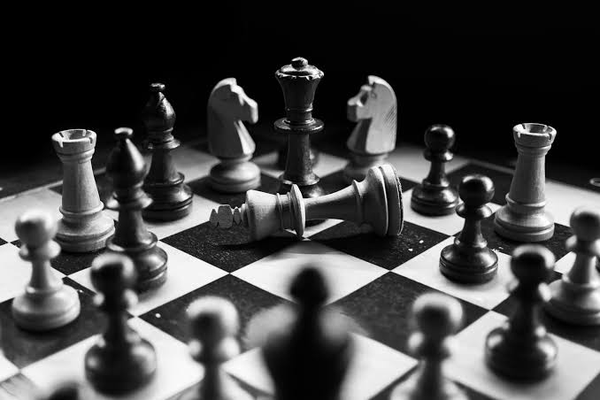

Welcome to chess
What is chess?
Chess, the ultimate battle of wits, where every move shapes the destiny of the board. It's a captivating game of strategy and foresight, where pawns can become kings and queens fall in a single stroke. The thrill of outsmarting your opponent, predicting their every move, and orchestrating a masterful checkmate is unmatched. With each game, you delve deeper into the possibilities, honing your skills and unleashing your inner grandmaster. In the world of chess, every move is a masterpiece waiting to unfold, and every victory is a triumph of intellect and cunning.
